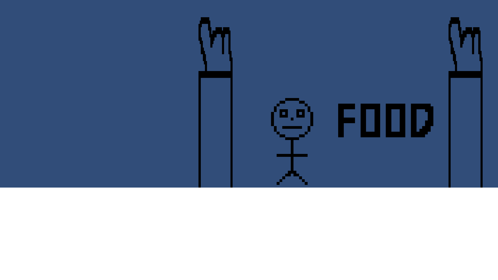

So this is the first ever Devlog and it's already late. This was supposed to come out on Friday, June 14th, but it's currently June 15th at around 1AM and I've just started writing this thing. Up until now, all of my games have fallen victim to shiny object syndrome. This basically means that I've started on a project, worked on it for a little bit most of the time never even going past the brainstorming phase, before coming up with a new idea that I thought was really good, and abandoning the previous idea to work on it. This time will be different though. This is the first time I'm actually determined to see a project through to the finish. Right now, the plan is for the game to be a puzzle / exploration / survival game. I don't really want to go into the story too much right now because the game will be pretty story driven and I don't want to spoil the whole thing at the moment, so let's get into what the I've done so far.
Ok, so between the last paragraph and this one, I've gone to sleep and done some chores making this devlog even more late. The game currently looks like shit, but it has to be like that at the moment. The biggest thing that's been stopping me from making more and better games has been the art. I'm awful at 3d modelling and 2d digital art, so I've sort of been discouraged / turned off from making a bunch of games and have been working on web development instead. But, I realise that I'll never get better at 3d modelling or 2d art if I don't practise. So I've started the game off with shitty art, and plan on inproving it later on once I get some more of the framework of the game set up. So here's what the game looks like so far.
That's literally all there is right now. There's the player, two trees, and a placeholder food item that just says food so I can work on item collection. I have player movemnt working and the camera follows the player. I was going to put in a video of it, but I can't figure out how my screen recorder works. Hopefully I can figure it out for the devlog next week. I plan on releasing one every Friday. This website looks terrible at the moment as well. That's something else I have to work on. Well, See you next Friday!